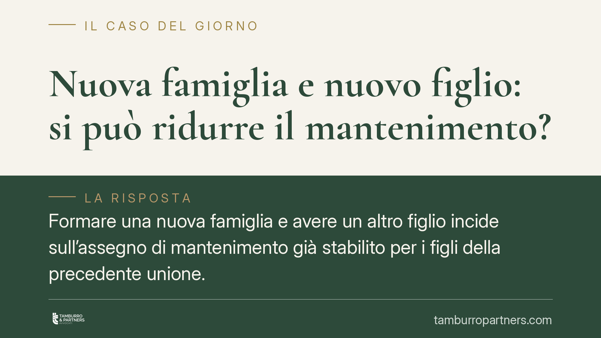

Nuova famiglia e nuovo figlio: si può ridurre il mantenimento?
Formare una nuova famiglia e avere un altro figlio incide sull'assegno di mantenimento già stabilito per i figli della precedente unione. La giurisprudenza esclude qualsiasi automatismo: la revisione va richiesta al giudice e chi la domanda deve dimostrare un effettivo peggioramento della propria capacità economica. Ecco cosa rileva davvero e come muoversi.

Il punto: nessuna riduzione automatica
La domanda ricorre spesso: chi versa il mantenimento ai figli nati da una prima relazione e poi costruisce un nuovo nucleo familiare, con la nascita di ulteriori figli, può ottenere una riduzione dell'assegno?
La risposta della giurisprudenza è netta nel metodo: la nascita di nuovi figli e la formazione di una nuova famiglia sono circostanze potenzialmente rilevanti, ma non producono alcuna riduzione automatica. L'importo fissato in sede di separazione o divorzio resta dovuto finché un provvedimento del giudice non lo modifica. Chi smette di pagare o riduce di propria iniziativa i versamenti agisce a proprio rischio.
Inquadramento normativo
Il riferimento è l'art. 337-ter del Codice civile, che disciplina il contributo al mantenimento dei figli in caso di crisi della coppia. La norma impone al giudice di determinare l'assegno secondo un criterio di proporzionalità, ponderando una pluralità di elementi: le attuali esigenze del figlio, il tenore di vita goduto in costanza di convivenza, i tempi di permanenza presso ciascun genitore, le risorse economiche di entrambi e il valore economico dei compiti domestici e di cura assunti da ciascuno.
È un giudizio comparativo, non aritmetico. Il giudice non applica una percentuale fissa sul reddito, ma bilancia bisogni del minore e capacità contributiva dei genitori. Per questo la sopravvenienza di un nuovo figlio non basta da sola: essa incide sulla capacità contributiva del genitore obbligato, ma va inserita nel medesimo bilanciamento e messa a confronto con le esigenze — anch'esse mutevoli — del figlio del primo nucleo.
La revisione delle condizioni economiche si chiede ai sensi dell'art. 337-quinquies c.c., che consente la modifica dei provvedimenti in presenza di fatti sopravvenuti. Qui opera la regola cardine: l'onere della prova grava su chi domanda la revisione. Non è l'ex coniuge a dover dimostrare che nulla è cambiato; è il genitore obbligato a dover provare, in modo concreto e documentato, il peggioramento delle proprie condizioni.
Implicazioni pratiche
Il punto più delicato è la distinzione tra peggioramento subìto e peggioramento provocato. La nascita di un figlio è un fatto oggettivo che accresce le uscite del genitore; una nuova convivenza, di per sé, non lo è. Se invece la riduzione del reddito è volontaria — dimissioni non giustificate, scelte lavorative dettate dall'intento di comprimere l'assegno — il giudice non la valorizza a favore di chi la invoca.
Attenzione anche al rapporto con il reddito del nuovo partner. Il partner non ha alcun obbligo diretto di mantenimento verso i figli del primo nucleo del compagno o della compagna. Il suo reddito, tuttavia, può rilevare indirettamente: se contribuisce alle spese domestiche del nuovo nucleo, alleggerisce di fatto gli oneri del genitore obbligato e incide sulla sua reale capacità contributiva. È un elemento di contesto, non un titolo di responsabilità.
Va infine ricordato che l'interesse prioritario resta quello dei figli del primo nucleo: la nuova genitorialità non può tradursi in un sacrificio del loro diritto al mantenimento, ma in un riequilibrio ragionevole delle risorse disponibili.
Cosa fare in concreto
- Non sospendere i versamenti. La sospensione o riduzione unilaterale espone a decreto ingiuntivo, pignoramento e, nei casi più gravi, a profili di rilievo penale. L'importo resta dovuto fino al provvedimento del giudice.
- Raccogliere prova documentale del peggioramento. Certificato di nascita del nuovo figlio, dichiarazioni dei redditi, buste paga, spese ricorrenti del nuovo nucleo, eventuali eventi che hanno ridotto il reddito.
- Verificare la genuinità del calo reddituale. Se il reddito è diminuito per scelta, documentare le ragioni oggettive: solo un peggioramento non volontario è valorizzabile.
- Depositare ricorso per revisione ex art. 337-quinquies c.c. presso il tribunale competente, allegando la prova del mutamento sopravvenuto.
- Farsi assistere prima di ogni iniziativa. Una valutazione preliminare della fondatezza consente di stimare margini e rischi, evitando mosse controproducenti.
Contributo informativo a cura di Tamburro & Partners Avvocati. Non costituisce parere legale.
Ogni famiglia ha il suo equilibrio.
Separazione, divorzio, affidamento, assegno: se vuoi un confronto riservato su una specifica situazione, scrivi allo studio. Ti rispondiamo entro un giorno lavorativo.